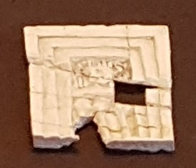

Samaria Ivories

- Find Name
- Samaria Ivories
- Description
- About 500 carved ivory pieces, mostly furniture inlays and decorations including winged sphinxes and goddess figures, excavated at Samaria in 1908–1935 (Harvard Expedition 1908–1910 and British Expedition 1931–1935), found in and near the royal palace complex, largely in later debris. Dated to the 9th–8th centuries BCE, when Samaria was capital of the kingdom of Israel. The full assemblage, including fragments, runs to over 12,500 items, and the ivories form the largest assemblage of elaborate Levantine ivory carving unearthed in the Levant itself.
- Historical Period
- Iron Age II
- Evidence Class
- Contextual
- Interpretations
- The ivories are not inscribed with any king's name, so they do not prove by themselves that a particular palace room was Ahab's; the connection is contextual. The palace was built by Omri and adorned by Ahab, and the Bible speaks of 'the ivory house which he made' (1 Kings 22:39) and 'beds of ivory' (Amos 6:4). Scholars formerly attributed the whole assemblage to 'pagan' Phoenician workmanship; recent work challenges that assumption and notes there is no archaeological evidence the ivories were in fact Phoenician imports. Their idolatrous motifs belong to the world the prophets rebuked, not to proof of one king's personal idolatry.
- Related Places
- Related Books
- Related Events
- Related People
- Scripture Illuminated
- Biblical Significance
- They give physical substance to the Bible's picture of a wealthy, ivory-adorned Israelite capital and to the luxury Amos condemned, showing the royal court culture of the divided monarchy.
- Artifact Date
- 9th–8th centuries BCE
- Current Location
- Israel Museum, Jerusalem, and museums worldwide (collection split)
- Date Discovered
- 1908–1935
- Discovery Location
- Samaria, royal palace complex
- Timeline Era
- Divided Monarchy
Awaiting Review Not yet checked against scholarly sources. Treat its claims as provisional until this entry is reviewed. About verification
Last reviewed: not yet reviewed